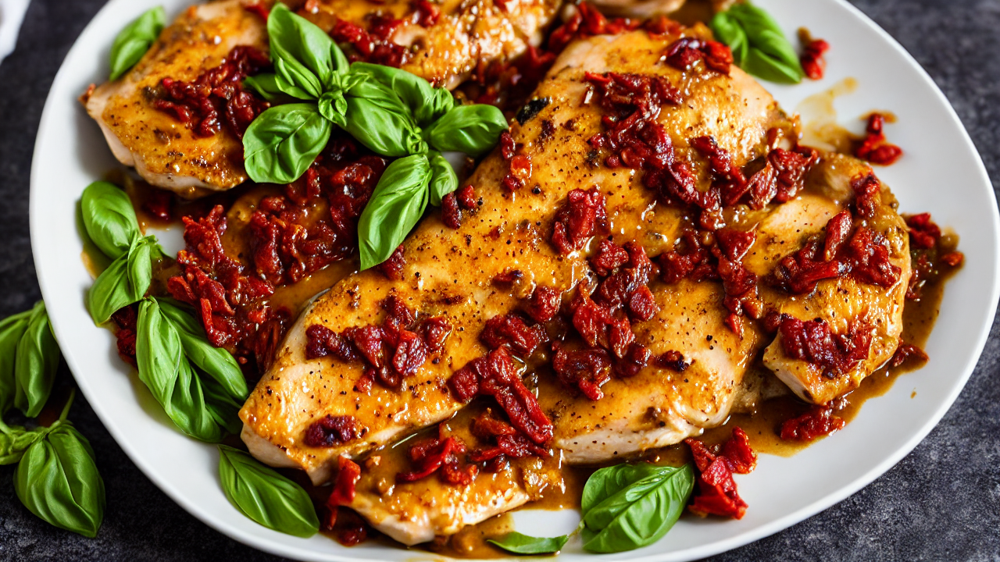
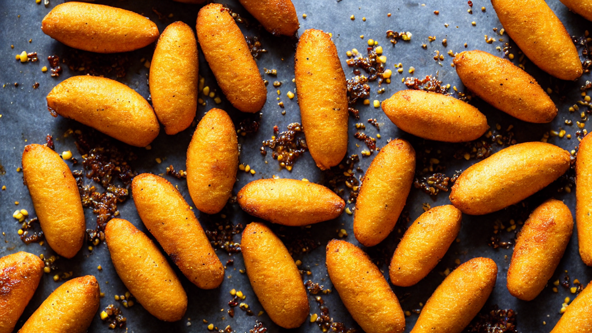
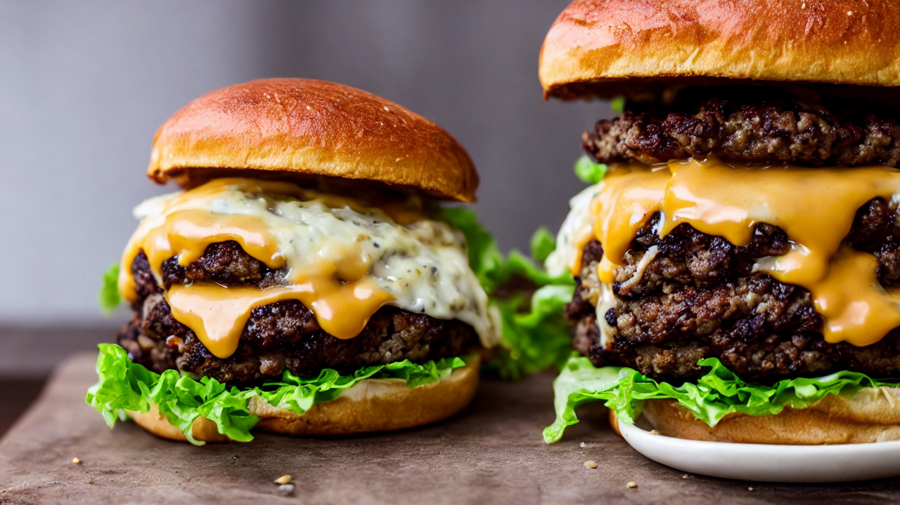
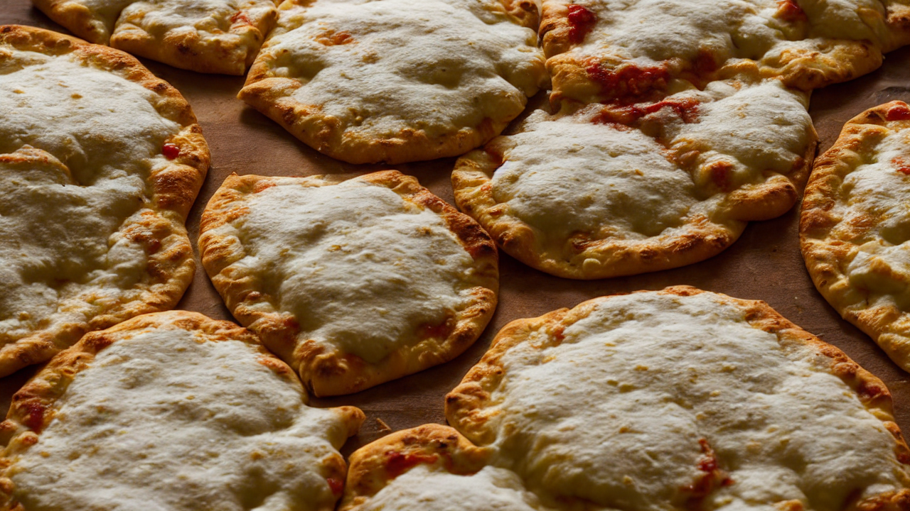

Quick Dinners

15-Minute Creamy Tuscan Salmon
This Creamy Tuscan Salmon recipe is a weeknight winner! Fresh salmon, cherry tomatoes, and...

Air Fryer Salmon
The best Air Fryer Salmon recipe — crispy skin, flaky interior, and ready in just 12 minut...

Butter Chicken
This homemade Butter Chicken is incredibly rich, creamy, and packed with warm spices. Tend...

Classic Garlic Butter Pasta
Indulge in this rich garlic butter pasta recipe with creamy sauce and tender noodles. Perf...

Crispy Air Fryer Garlic Parmesan Wings
Achieve restaurant-quality crispy wings at home with this air fryer garlic parmesan recipe...

Easy One-Pan Lemon Herb Chicken
Transform chicken breasts into a juicy, herb-packed meal in one pan! This lemon herb recip...

Marry Me Chicken
This Marry Me Chicken is so unbelievably good that it earned its name for a reason. Juicy ...

Spicy Korean Fire Noodles Recipe
Crave this fiery Korean noodle dish with a spicy kick! Perfect for quick weeknight meals. ...

Viral TikTok Baked Feta Pasta
This Baked Feta Pasta is so good, you'll never order takeout again! Creamy, cheesy, and pa...
Viral & Trending

Baked Oats
These Baked Oats taste like eating cake for breakfast but are actually healthy! Naturally ...

Authentic Birria Tacos
These viral Birria Tacos are loaded with tender, slow-braised beef, melted cheese, and ser...

3-Ingredient Cloud Bread
This viral Cloud Bread is impossibly fluffy, slightly sweet, and melts in your mouth like ...

Fluffy Japanese Souffle Pancakes
Discover how to make restaurant-quality fluffy Japanese souffle pancakes at home! These cl...

Korean Corn Dogs with Cheese Pull
Discover how to make Korean Corn Dogs with Cheese Pull at home! This street-style snack co...
Marry Me Chicken
This Marry Me Chicken is so unbelievably good that it earned its name for a reason. Juicy ...

Perfect Smash Burgers
These Smash Burgers have the crispiest edges, juiciest centers, and the most irresistible ...
Viral TikTok Baked Feta Pasta
This Baked Feta Pasta is so good, you'll never order takeout again! Creamy, cheesy, and pa...
Comfort Food
Butter Chicken
This homemade Butter Chicken is incredibly rich, creamy, and packed with warm spices. Tend...

Creamy Mushroom Risotto
Indulge in this velvety Creamy Mushroom Risotto recipe! Perfectly balanced with Arborio ri...
Crispy Air Fryer Garlic Parmesan Wings
Achieve restaurant-quality crispy wings at home with this air fryer garlic parmesan recipe...

Perfect Homemade Pizza Dough – Crispy, Chewy, and Full of Flavor!
Master the art of homemade pizza dough with this easy recipe! Achieve a crispy, chewy crus...

Ultimate Loaded Nachos
This loaded nachos recipe is a crowd-pleaser with melted cheese, seasoned beef, and crispy...
Baking & Sweets

5-Minute Chocolate Mug Cake
This 5-Minute Chocolate Mug Cake is a game-changer for sweet cravings! Perfect for busy ni...
Baked Oats
These Baked Oats taste like eating cake for breakfast but are actually healthy! Naturally ...
3-Ingredient Cloud Bread
This viral Cloud Bread is impossibly fluffy, slightly sweet, and melts in your mouth like ...
Fluffy Japanese Souffle Pancakes
Discover how to make restaurant-quality fluffy Japanese souffle pancakes at home! These cl...
Healthy
Air Fryer Salmon
The best Air Fryer Salmon recipe — crispy skin, flaky interior, and ready in just 12 minut...
Baked Oats
These Baked Oats taste like eating cake for breakfast but are actually healthy! Naturally ...
Crispy Air Fryer Garlic Parmesan Wings
Achieve restaurant-quality crispy wings at home with this air fryer garlic parmesan recipe...
About Quick Bites Kitchen
Quick Bites Kitchen brings you easy, delicious recipes with beautiful step-by-step photos. From viral TikTok recipes to comfort food classics, we make cooking simple and fun. Every recipe comes with detailed instructions and photos for each step.
Browse our growing collection of quick dinner ideas, healthy meals, viral food trends, baking recipes, and international favorites. New recipes added every week!